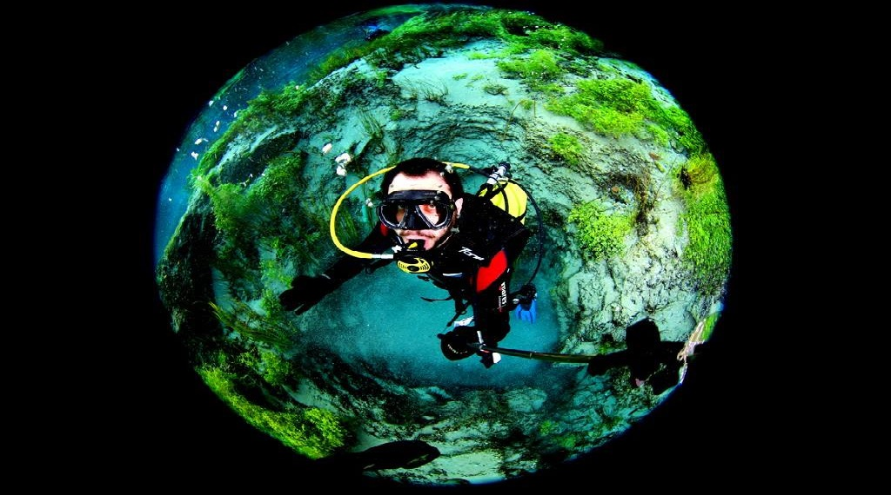

Anasayfa
Merhaba ben Fatih Tatoğlu. Her şey merak etmem ile başladı. "Bunu nasıl yapıyorlar?", "Bu nasıl çalışıyor?" ve benzeri soruları soran bir çocuk olduğumu söylüyor ailem. Bu siteyi merak ettiklerimi ve öğrendiklerimi paylaşmak için hazırladım. Ek olarak öğrenirken takip ettiğim kaynakları ve denemelerimi de paylaşıyor olacağım.
Sitenin tasarımını ve yayımlanmasını sağlayan sistemi ben geliştirdim. Bu konu ile ilgili yazıları Projeler menüsünde bulacaksınız. Koçluk menüsü altında sosyolojik ve psikolojik olarak gözlemlediğim (uzmanı değilim) konulardaki yazılarım ve deneyimlerim yer almakta. Daha çok iş hayatı, yöneticilik ve takım çalışması üzerine yazıyorum. Kendime Notlar kısmında ise daha çok kendim için aldığım teknik ya da motivasyon arttırıcı notlar yer alıyor. Ama tam bir sınırlama yok biraz daha aklıma eseni yazıyorum diyebilirim.
Site benim aklım gibi biraz. Şimdiden iyi okumalar diliyorum.
Referanslar
- [1]: Fotoğraf Erkan Balk tarafından 2 Ocak 2015 tarihinde Eskişehir'de çekilmiştir.